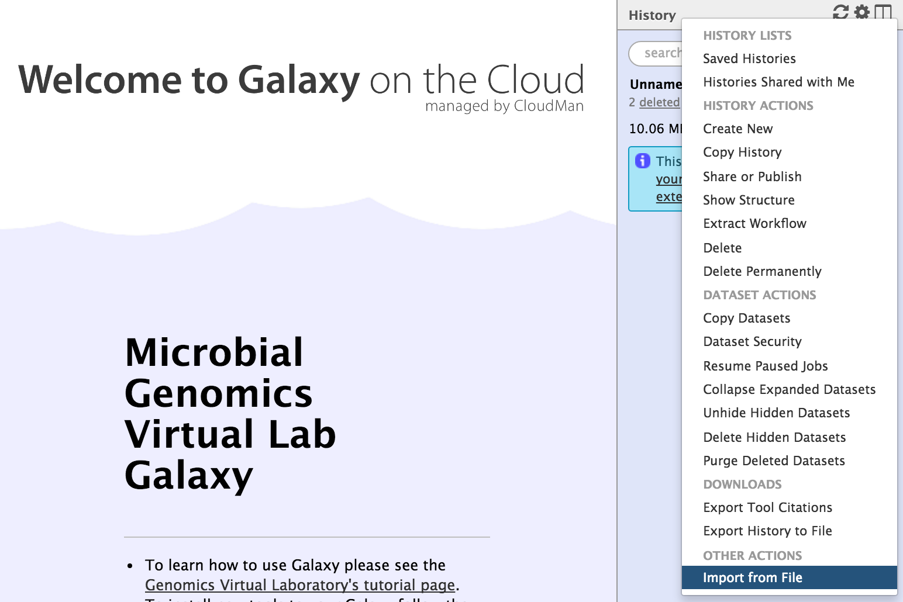
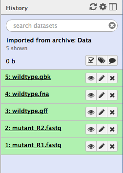

Dataset
This page contains data for the tutorials.
Individual input files
Wildtype reference
Mutant Illumina sequence
Assembled contigs
Upload to Galaxy
- Download required file(s) to your computer.
- From the Galaxy tool panel, click on
Get Data → Upload File - Click the
Choose local file button - Find and select the
file you downloaded and clickOpen - Set the
Type correctly. - Click the
Start button. - Once the progress bar reaches 100%, click the
Close button - The file will now upload to your current history.
Galaxy histories
- Galaxy history of input files
- Galaxy history: FastQC
- Galaxy history: Spades
- Galaxy history: Prokka
- Galaxy history: Snippy
To get the saved tutorial history (a set of files) into Galaxy:
- Right-click on
Galaxy history of input files above and copy link address. - Go to your Galaxy instance. Make sure you are registered and logged in. Refresh the page.
- Click on the
History cog
- Select
Import from File

- In the box called
Archived History URL , paste in the link address to the Galaxy history. - Click
Submit - Wait a few seconds.
- Click on the “view all histories” button

- See if the Galaxy history has been imported: it will be called
imported from archive: Data - Above that pane, click on the
Switch to button. - Then click
Done (in the top left corner). - You should now have a list of five files in your current history.
